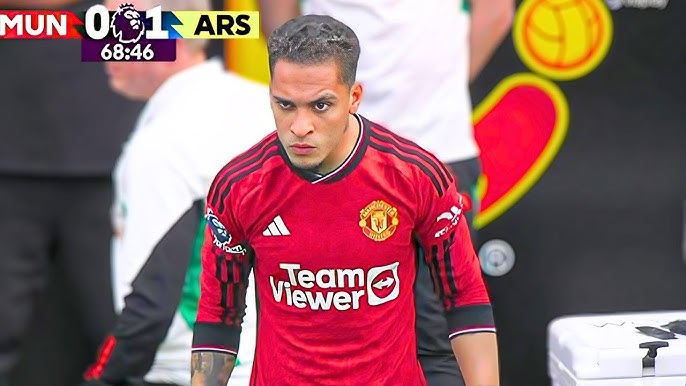

El Clásico (in Spanish, also in lowercase letters;[1] Spanish pronunciation: [el ˈklasiko]) or El Clàssic (in Catalan,[2] pronounced [əl ˈklasik]), both meaning "The Classic", is the name given to any football match between rival clubs Barcelona and Real Madrid. Originally referring to competitions held in the Spanish championship, the term now includes every match between the clubs, such as those in the UEFA Champions League, Supercopa de España and Copa del Rey. It is considered one of the biggest club football games in the world and is among the most viewed annual sporting events.[3][4][5][6] A fixture known for its intensity, it has featured memorable goal celebrations from both teams, often involving mockery from both sides.
The fixture carries a large-scale political connotation, as Madrid is the capital and largest city of Spain and Barcelona is the capital and largest city of the autonomous community of Catalonia, which has an ongoing independence movement. The two clubs are often identified with opposing political positions, with Real Madrid viewed as representing Spanish nationalism and Barcelona viewed as representing Catalan nationalism.[8] The two clubs are among the wealthiest and most successful football clubs in the world; in 2014 Forbes ranked Barcelona and Real Madrid the world's two most valuable sports teams.[4] Both clubs have a global fanbase; they are the world's two most followed sports teams on social media.[9][10]
Real Madrid leads in head-to-head results in official competitive matches with 105 wins to Barcelona's 100 with 52 draws as of the match played on 21 April 2024.[11][12][13][14] Along with Athletic Bilbao, they are the only clubs in La Liga to have never been relegated
For more information about him, click the link below: Antony Matheus dos Santos (born 24 February 2000), known mononymously as Antony (Brazilian Portuguese pronunciation: [ˈɐ̃tɔni]),[3] is a Brazilian professional footballer who plays as a right winger for Premier League club Manchester United and the Brazil national team.
Antony graduated from the São Paulo academy and made his senior debut for the club in 2018. He moved abroad to Ajax in the summer of 2020, where he won two Eredivisie titles and one KNVB Cup during his two seasons. Antony's performances in the Netherlands led to a transfer worth €95 million (£82 million) to Manchester United, the highest sum paid for an Eredivisie player.
Antony won a gold medal with the Brazil under-23 team at the 2020 Summer Olympics. He then made his senior international debut and scored against Venezuela in October 2021, going on to represent Brazil at the 2022 FIFA World Cup.
For more information about him, click the link below: